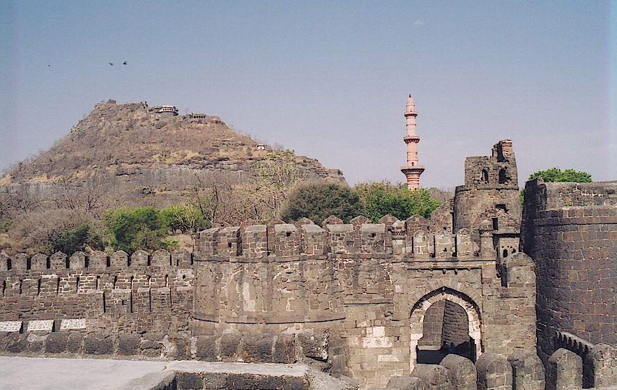
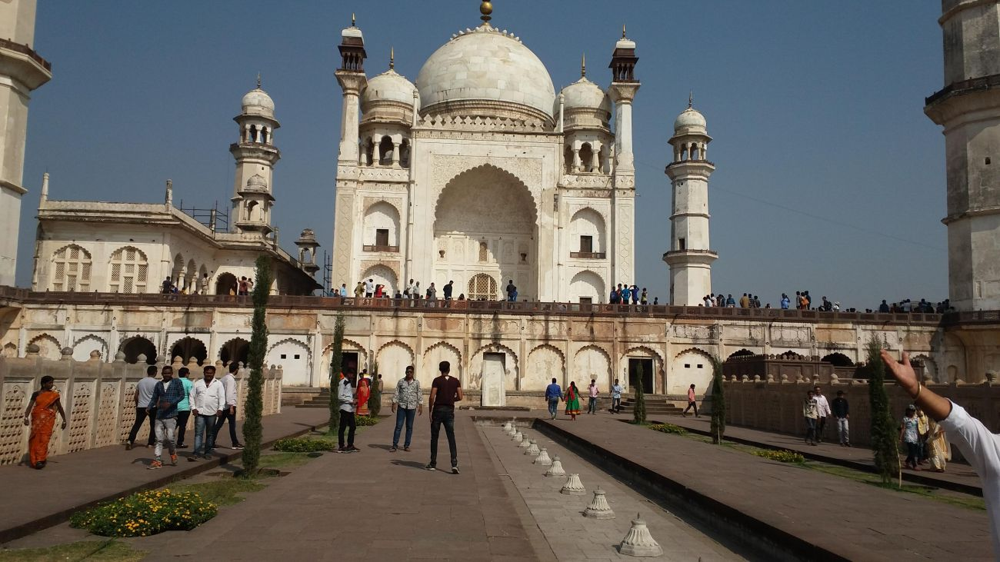
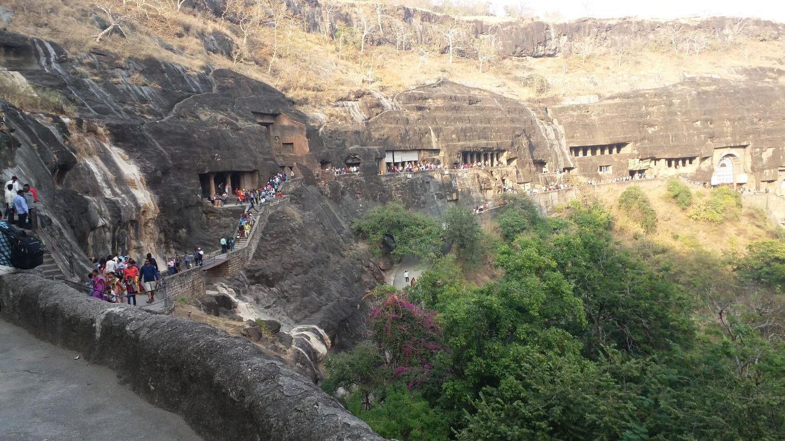
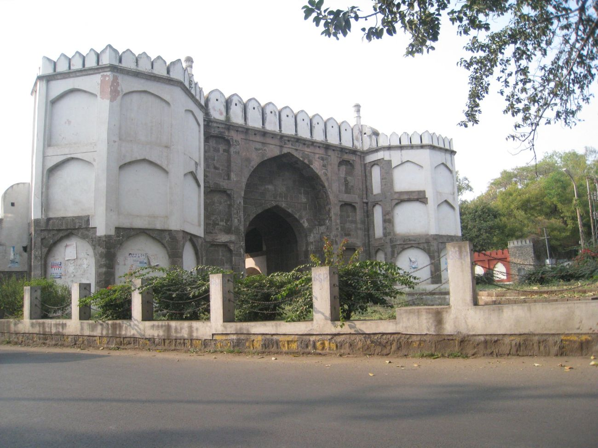
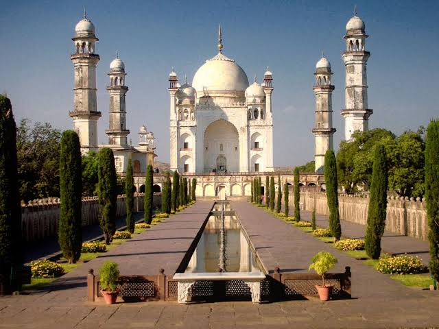

Aurangabad city of gates





HOME
PACKAGE
MAPS
CALANDER
ABOUT
Bibi Ka Maqbara
Panchakki (water mill)
Kali Masjid, Jama Masjid
Aurangabad caves
Mahismal hill station
daultabad fort
Gautala Autramghat Sanctuary गौताळा आणि औट्रम घाट अभयारण्य